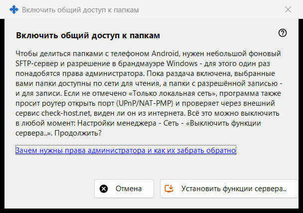
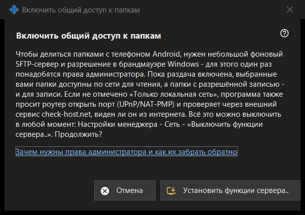

Включить общий доступ к папкам
Назначение
Запрашивает разрешение установить серверную часть раздачи: небольшой фоновый SFTP-сервер и одно исключение брандмауэра Windows. Окно открывается кнопкой «Включить функции сервера..» главного окна и из мастеров; права администратора нужны один раз.


Порядок действий
- Прочитайте пояснение.
- Нажмите «Установить функции сервера..».
- Подтвердите запрос прав администратора Windows.
- Дождитесь строки с результатом; при успехе окно сообщает, что общий доступ включён.
- «Отмена» закрывает окно без изменений.
Элементы окна
Что оно делает
Для раздачи папок на телефон с Android нужны небольшой фоновый SFTP-сервер и разрешение брандмауэра Windows. Пока раздача включена, выбранные папки можно читать по сети, а открытые на запись - ещё и изменять. Если не отмечен режим «только локальная сеть», программа дополнительно просит роутер открыть порт (UPnP/NAT-PMP) и проверяет адрес через внешний сервис.
Результаты
«Готово. Общий доступ включён.»; «Общий доступ не включён - не получены права администратора.», если запрос отклонён (ничего не меняется, можно повторить); либо сбой настройки брандмауэра - тогда окно просит повторить и отправить журнал: Настройки менеджера - Справка - «Экспорт журналов для анализа».
Права администратора и как их забрать
Ссылка «Зачем нужны права администратора и как их забрать обратно» объясняет, для чего права нужны. Отменить действие можно пунктом «Выключить функции сервера..» в настройках менеджера: раздача останавливается, подключённые телефоны отключаются, разрешение брандмауэра снимается. Список папок и пароль сохраняются, всё можно включить снова.
Настройки менеджера · Настройки общего доступа SFTP · Настройки сервера обмена